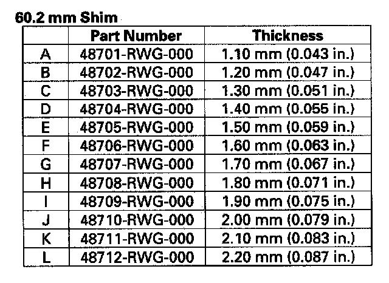

Side Case Replacement
Side Case Replacement
1. Remove the rear differential.
2. Remove the rear differential front mounting brackets (A) from the rear differential (B).
3. Remove the differential fluid temperature sensor cover (A) rear differential fluid temperature sensor (B) O-ring (C) and rear differential harness bracket (D).
4. Remove the rear differential left side case (A) or the rear differential right side case (B) the 10 x 12 mm dowel pins (C) from the rear differential center case (D).
5. Replace the rear differential left side case or the differential right side case.
6. Remove the ring gear (A) needle bearing (B) and the 60.2 mm shim (C) from the rear differential side case (D).
7. Measure distance (1) between the end of the rear differential side case (A) and 60.2 mm shim contact area of planetary gear (B) with a straight edge (C) and depth gauge (D). Measure at three locations, and average the reading.
NOTE:
- Carry out the measurement at normal room temperature.
- Clean all the parts thoroughly before measure.
8. Measure distance (2) between the end of the rear differential center case (A) and ring gear contact area of taper roller bearing (B) with a straight edge (C) and depth gauge (D). Measure at three locations, and average the reading.
NOTE:
- Carry out the measurement at normal room temperature.
- Clean all the parts thoroughly before measure.
9. Measure the distance (3) between the needle bearing (A) and tapper roller bearing contact area of ring gear (B) with a depth gauge (C). Measure at three locations, and average the reading.
NOTE:
- Carry out the measurement at normal room temperature.
- Clean all the parts thoroughly before measure.
Shim Selection Formula
10. Select the proper 60.2 mm shim from the table. Follow the example below, and use the measurements you made in steps 7 to 9.
(Basic Formula)
(1)+(2)-[(3)+0.19)] = shim thickness
0.19 mm (0.007 in.):
middle of the clearance standard.
Clearance Standard:
0.14-0.24 mm (0.006-0.009 in.)
(For example)
(1) = 6.12 mm (0.241 in.)
(2) = 15.3 mm (0.602 in.)
(3) = 19.5 mm (0.770 in.)
6.12+15.3-(19.5+0.19) = 1.73 mm
Select the 1.70 mm shim from the table.

11. Place one strip of plastigage (A) on 60.2 mm shim contact area of planetary gear (B). Install the 60.2 mm shim (C) needle bearing (D) and the ring gear (E). Measure at three locations, and average the reading.
NOTE:
- Carry out the measurement at normal room temperature.
- Clean all the parts thoroughly before measure.
12. Install the 8 x 12 mm dowel pins (A) the rear differential right side case (B) or the rear differential left side case (C) and the mounting bolts (D).
13. Tighten the mounting bolts in a crisscross pattern in several steps.
14. Remove the rear differential left side case (A) or the rear differential right side case (B) the 10 x 12 mm dowel pins (C) from the rear differential center case (D).
15. Remove the ring gear (A) needle bearing (B) and the 60.2 mm shim (C) from the rear differential side case (D).
16. Measure the widest part of the plastigage.
17. If the clearance is more than the standard, go to step 7. If the clearance measured in step 16 is within the standard, go to step 18.
18. Install the 60.2 mm shim (A) needle bearing (B) and the ring gear (C) onto the rear differential side case (D).
19. Remove the dirt and oil from the sealing surfaces. Apply liquid gasket (P/N 08718-0001) to the sealing surface. Make sure you seal the entire circumference of the bolt holes to prevent oil leakage.
NOTE:
- You must assemble the housings within do in 5 minutes after applying the liquid gasket. If not, the sealing surface must be cleaned, and the liquid gasket reapplied.
- Allow it to cure at least 30 minutes after assembly before filling the differential with fluid.
20. Install the 8 x 12 mm dowel pins (A) the rear differential right side case (B) or the rear differential left side case (C) and the mounting bolts (D) onto the rear differential center case (E).
21. Tighten the mounting bolts in a crisscross pattern in several steps.
22. Install the differential fluid temperature sensor cover (A) rear differential fluid temperature sensor (B) new O-ring (C) and rear differential harness bracket (D).
23. Install the rear differential front mounting brackets (A) from the rear differential (B).
NOTE: Install a lower surface of the guide (C) horizontally as shown, then tighten the rear differential front mounting bracket bolts (D).
24. Install the rear differential.
25. Refill the differential fluid.
Fluid type Acura All-Wheel Drive Fluid (DPSF)
Note:
*Acura All-Wheel Drive Fluid (DPSF) replaces ATF-Z1 and is the factory fill for all SH-AWD models, however if you need to top off the differential and "DPSF" isn't available ATF-Z1 may be used.
*Per Acura Service News article: Oct 2010